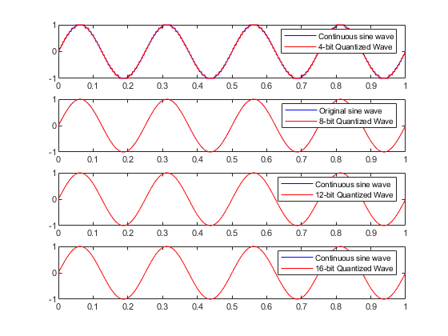
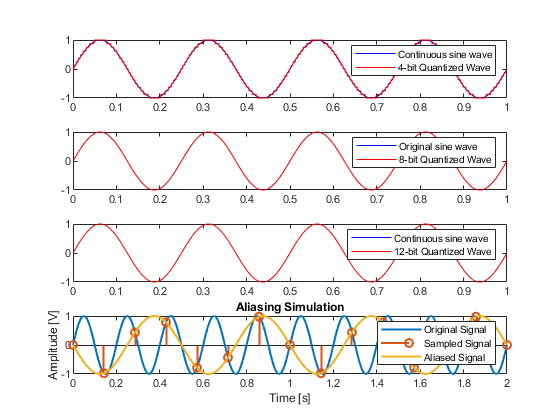

Contents
assignment document for Paul Kumar 1002240657
Q1 Quantization simulation
% q = Vmax/(2^b - 1) * V clear all Ts = 0.002; t = linspace(0, 1, 1000); sineWave = sin((2*pi*4)*t); %sanity check %plot(t, sineWave) %create quantized waveform sineWaveQuant_4bit = quantization(sineWave, 4); sineWaveQuant_8bit = quantization(sineWave, 8); sineWaveQuant_12bit = quantization(sineWave, 12); sineWaveQuant_16bit = quantization(sineWave, 16); figure(1) subplot(4,1,1); plot(t, sineWave, '-b'); hold on plot(t, sineWaveQuant_4bit, '-r'); hold off legend("Continuous sine wave", "4-bit Quantized Wave"); subplot(4,1,2); plot(t, sineWave, '-b'); hold on plot(t, sineWaveQuant_8bit, '-r'); hold off legend("Original sine wave", "8-bit Quantized Wave"); subplot(4,1,3); plot(t, sineWave, '-b'); hold on plot(t, sineWaveQuant_12bit, '-r'); hold off legend("Continuous sine wave", "12-bit Quantized Wave"); subplot(4,1,4); plot(t, sineWave, '-b'); hold on plot(t, sineWaveQuant_16bit, '-r'); hold off legend("Continuous sine wave", "16-bit Quantized Wave"); % now find the difference in the signal - this is quantization equation % value error_4bit = sineWave - sineWaveQuant_4bit; error_8bit = sineWave - sineWaveQuant_8bit; error_12bit = sineWave - sineWaveQuant_12bit; error_16bit = sineWave - sineWaveQuant_16bit; quant_4bit = (1/(2^4-1)); quant_8bit = (1/(2^8-1)); quant_12bit = (1/(2^12-1)); quant_16bit = (1/(2^16-1));
question 2
f = 5; T = 1/f; Ts = 1/7; t = linspace(0,2,1000); sineWave = sin(2*pi*f*t); %create a time array of samples. recall a sampled signal is simply %(singal)*delta(t - Ts*k), where k is some shift tSampled = 0:Ts:2; aliasedSine = sin(2*pi*f*tSampled); %reconstructed aliased sine wave. note the resulting freq of the aliased %sine wave is 2Hz ie Fa element of the set of (0.5Fs, Fs), then Fa, the %aliased frequency is Fa = Fs - F, where F is the original frequency %create new 100pt array to show for completeness tAliased = linspace(0,2,1000); sineContAliased = -1*sin(2*pi*2*tAliased); figure(1) plot(t, sineWave, 'LineWidth', 1.5) title("Aliasing Simulation") xlabel("Time [s]") ylabel("Amplitude [V]") hold on stem(tSampled, aliasedSine, 'LineWidth', 1.5) plot(tAliased, sineContAliased, 'LineWidth', 1.5); legend("Original Signal", "Sampled Signal", "Aliased Signal")
question 3
%load dtaa data1 = load('data_c1.mat'); %grab obj data1 = data1.x; %segment the data into equal segments L = length(data1); segLength = floor(L/10); segMoments = zeros(1,10); segVar = zeros(1,10); % we are determining whether signal is stationary. Recall a signal is % stationary if all moments and joint moments do not depend on time. ie if % the mean and variance do not change in time (meaning that for any time % window we take, the mean and the variance will be the same), then the % signal is atationary

stationary = 1; for i = 1:segLength:L if(i+segLength-1>L) tempMean = mean(data1(i:end)); tempVar = var(data1(i:end)); segMoments((i+segLength-1)/segLength) = tempMean; segVar((i+segLength-1)/segLength) = tempVar; break end tempMean = mean(data1(i:i+segLength-1)); tempVar = var(data1(i:i+segLength-1)); segMoments((i+segLength-1)/segLength) = tempMean; segVar((i+segLength-1)/segLength) = tempVar; index = (i+segLength-1)/segLength; if(index ~= 1) if(segMoments(index) ~= segMoments(index-1) || segVar(index) ~= segMoments(index-1)) stationary = 0; end end end disp(segMoments); disp(segVar); if(~stationary) %applied the detrend function disp("Not stationary!") scrapedData = detrend(data1); segMoments = zeros(1,10); segVar = zeros(1,10); stationary = 1; for i = 1:segLength:L if(i+segLength-1>L) tempMean = mean(scrapedData(i:end)); tempVar = var(scrapedData(i:end)); segMoments((i+segLength-1)/segLength) = tempMean; segVar((i+segLength-1)/segLength) = tempVar; break end tempMean = mean(scrapedData(i:i+segLength-1)); tempVar = var(scrapedData(i:i+segLength-1)); segMoments((i+segLength-1)/segLength) = tempMean; segVar((i+segLength-1)/segLength) = tempVar; index = (i+segLength-1)/segLength; if(index ~= 1) if(segMoments(index) ~= segMoments(index-1) || segVar(index) ~= segMoments(index-1)) stationary = 0; end end end end disp(segMoments) disp(segVar) if(stationary) disp("Stantionary after detrend!") else disp("Not stationary pt2!") end % note! the moments and variance are not the same
Columns 1 through 7
0.1461 -0.1058 0.1875 0.3915 0.3092 0.4516 0.6808
Columns 8 through 10
0.6537 1.0329 0.9620
Columns 1 through 7
0.0878 0.0518 0.0897 0.0448 0.0939 0.0995 0.0828
Columns 8 through 10
0.0424 0.0582 0.1378
Not stationary!
Columns 1 through 7
0.1807 -0.1835 -0.0026 0.0891 -0.1055 -0.0755 0.0413
Columns 8 through 10
-0.0981 0.1687 -0.0146
Columns 1 through 7
0.0963 0.0561 0.0827 0.0406 0.0957 0.0858 0.0807
Columns 8 through 10
0.0440 0.0578 0.1518
Not stationary pt2!